Briare 2004

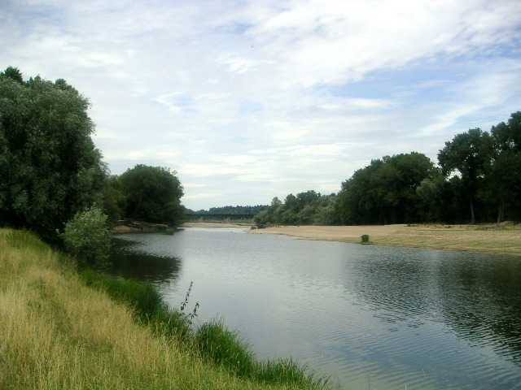
Le pique-nique de Briare est une sorte de rave-party : elle occupe des terrains pas réservés, pour des occupations inconnues des gens du coin. Mais elle en diffère par trois points essentiels :
1) Il n'y a pas de musique techno, rap, ou autre, ça nous change heureusement de quelques rencontres récentes...
2) On fait ça de jour, c'est plus sympa et on y voit.
3) On y fait du cerf-volant, principalement...
Il y a d'autres particularités : par exemple l'organisateur n'y vient pas ! Ou encore : tout le monde se connaît, mais si vous ne connaissez personne, venez quand même, comme ça on vous connaîtra aussi. Enfin le site est superbe.

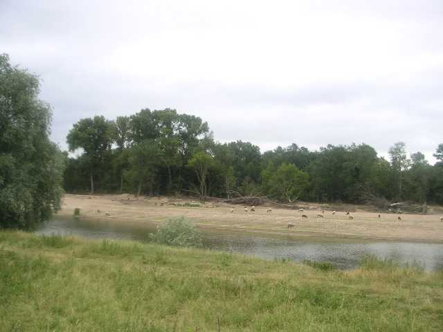
La Loire est calme en cette période, mais ce printemps elle avait tout envahi, rasant l'île en face, fermant le bras qui la séparait de la forêt, et contournant maintenant le total. Le pont-canal de Briare est, lui, bien ancré. C'est un des rares de ce type en France, où un canal passe au dessus d'un cours d'eau sans communiquer avec lui, et c'est un bon sujet de promenade ou de photo aéro-cerf-volistique.
Sur les rives, traversant les gués au besoin, paissent 260 brebis (c'est le berger qui nous l'a dit, j'en ai compté quand même 63 avant de m'endormir...), quelques béliers et quelques chèvres.

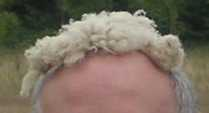
On trouve leurs traces, d'autres choses et même de leur laine partout. Certains en profitent pour essayer de se rajeunir...

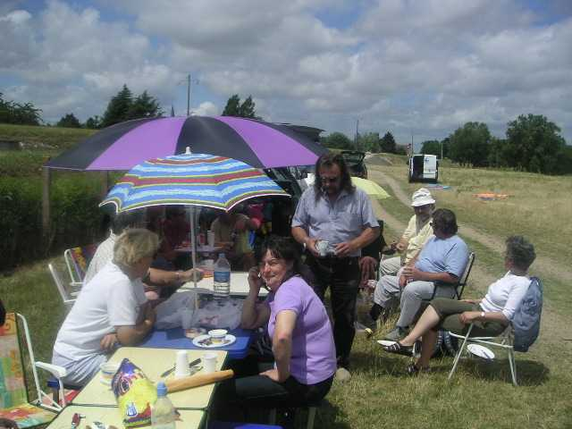
Au déjeuner, pique-nique individuel mais en commun au soleil, en partie abrité par le parasol de 3 m de diamètre de François (spi, carbone, articulations et raccords tournés à la main, et il a même volé... à l'envers et sans manche).

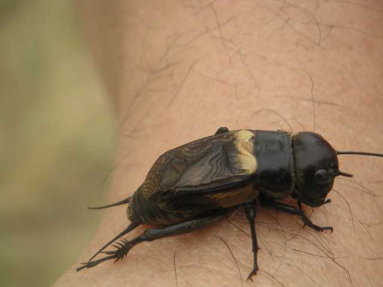

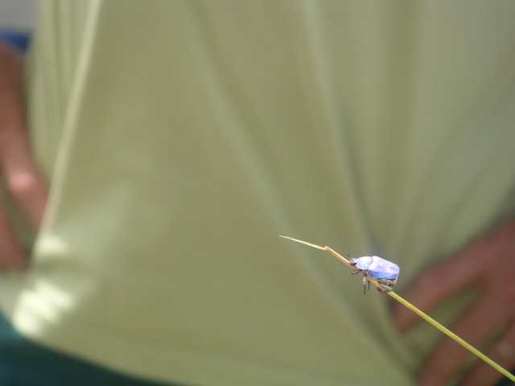
Après le repas, leçon d'entomologie : un grillon des champs et une je-sais-plus-le-nom d'un bleu iridescent qui chatoie sous le soleil, bien plus beau que sur la photo. On voit aussi des cantharides poudrées d'un jaune safran choisir les voitures ou les chemises comme terrain de repos (ou les ronger ?).

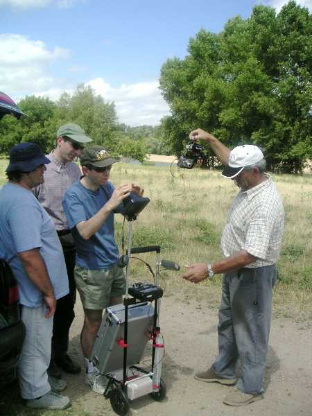

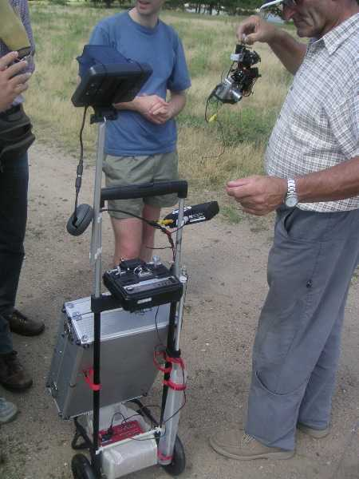
Les hommes s'intéressent ensuite à plus technique, comme l'ensemble sur roulettes de Jean-Claude pour photo sous cerf-volant. Les spécialistes n'auront aucun mal à reconnaître la télécommande, le récepteur vidéo, le moniteur de contrôle de l'image avec sa casquette, la nacelle elle-même, tenue par Jean-Claude et tout et tout.

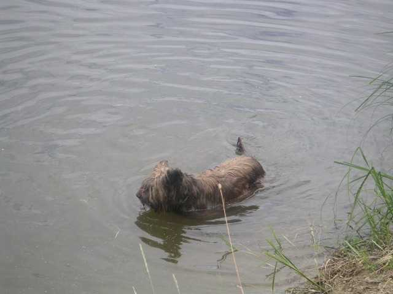
Il fait chaud, mais on reprend quand même les cerfs-volants, car cette année, le vent n'est pas mal, toujours un peu turbulent voire masqué en bas, mais honnête dès qu'on monte un peu. On peut voir le cerf-volant de Marc :

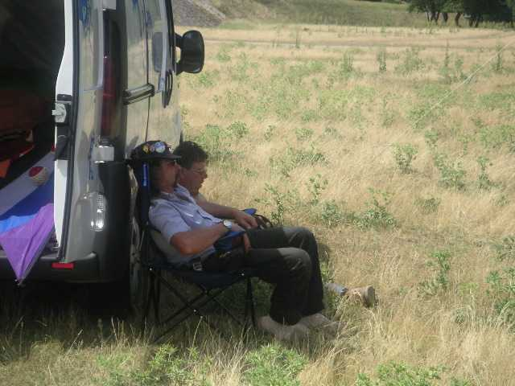
le cerf-volant de François :

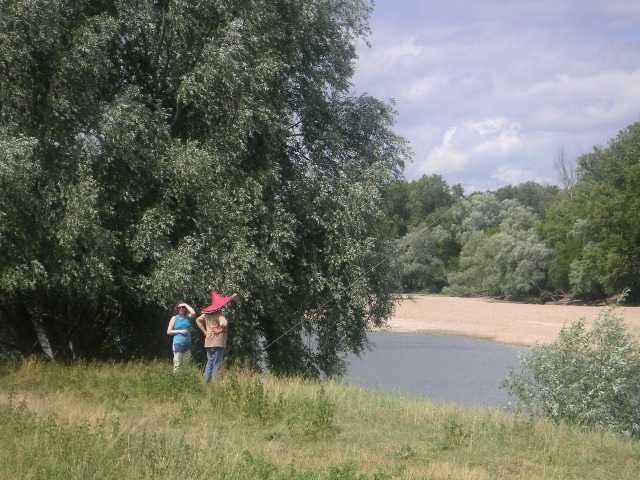
le cerf-volant d'Olivier :

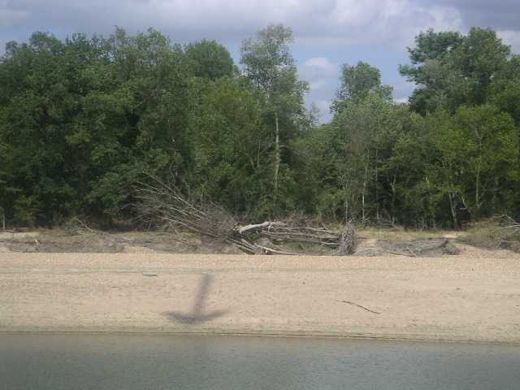

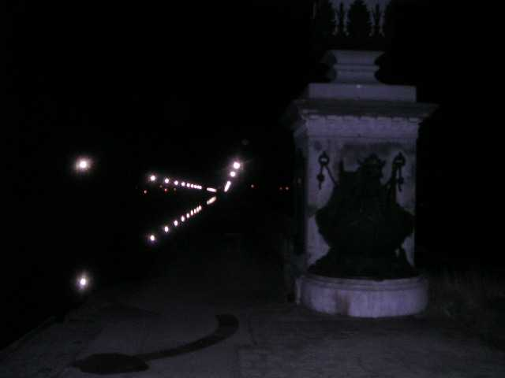
Finalement, on se quitte, une petite pizza en commun à Gien (note pour les fidèles : il y avait encore beach-volley, mais on n'y est pas allé...) avant de reprendre la route, et on laisse le Pont-canal veiller paisiblement sous ses lampadaires d'époque.